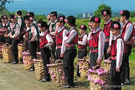
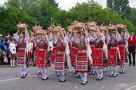
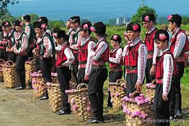
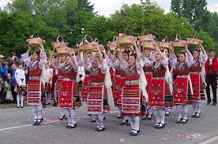

Local Festival Announced
 



Knezha’s highly anticipated annual summer festival has just been announced! This year’s event will take place from August 12 to 14 in the town square, featuring folk music, food, art, and dance performances.
The festival will include a traditional craft fair, street parades, fireworks, and family-friendly activities. Organizers expect record attendance. More info will be posted soon.